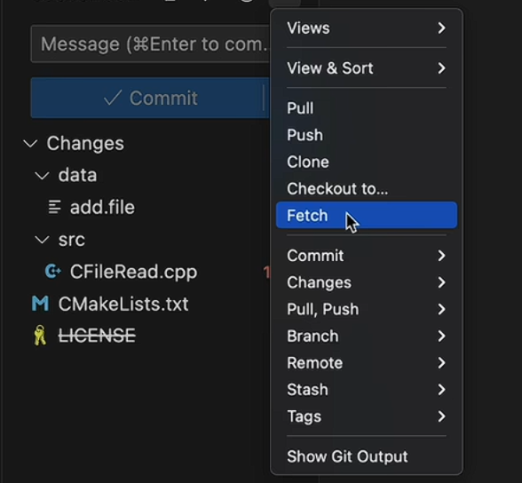

asyncawaitresolve() 2025.06.138 min read 异步 Promise 和 async/await 用清晰的心智模型理解异步流程、Promise 链和错误处理。 FrontendJavaScript
 2025.06.1210 min read Git 基础以及 VSCode 版本控制 覆盖分支、远端仓库、协作规则与 VSCode 中的常用操作。 BackendWorkflow
mAP5094.2+4.8% 2025.05.2211 min read YOLOV8 配置和性能分析 从 loss 到 precision、recall 与 mAP，读懂训练结果的真实含义。 AIComputer Vision
APIDBStorageUI 2025.05.127 min read 系统项目框架整理 拆解 database、API、storage 与用户接口之间的职责边界。 BackendArchitecture